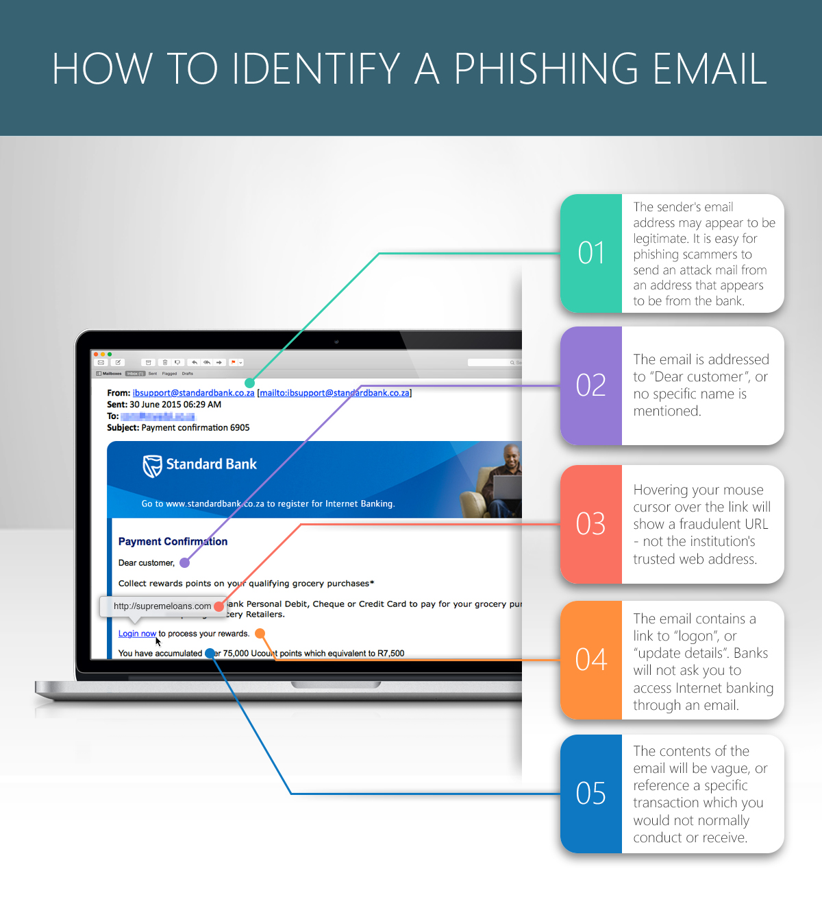

Social Engineering
Objectives
- Define social engineering and its role in exploiting human vulnerabilities for malicious purposes.
- Identify various social engineering techniques and their impact on network security.
- Explain the concept of phishing and recognize common characteristics of phishing emails.
- Define pharming and describe how it manipulates the DNS to redirect users to fraudulent websites.
- Define shoulder surfing and recognize situations where attackers might employ this low-tech technique.
- Explain blagging as a form of social engineering without relying on technical means.
- Define baiting and identify various tactics used by attackers to entice individuals.
- Provide strategies to verify the legitimacy of requests for sensitive information.
- Provide practical tips and guidelines for individuals to stay vigilant against social engineering attacks.
One of the weakest points for any network system are the users themselves, us! we can be easily fooled into activity that leads the attackers into our domestic and business worlds.
Social engineering techniques use psychological approaches to manipulate people into giving away confidential and personal information eg passwords and pin numbers.
There are many social engineering approaches including:
- Phishing
- Pharming
- Shoulder surfing
- Blagging (Pretexting)
- Baiting
Phishing
Phishing is a cyber attack technique that involves tricking individuals into divulging sensitive information, such as login credentials, personal details, or financial information. Attackers use various deceptive methods to appear trustworthy and legitimate, often mimicking reputable entities or services.
Phishing attacks commonly occur through emails, but they can also involve other communication channels like text messages, social media messages, or even phone calls. Attackers often use social engineering tactics to create messages that appear urgent, compelling, or trustworthy.
They often impersonate well-known and trusted entities, such as banks, government agencies, popular websites, or colleagues and will use branding from that organisation to make them appear legitimate.
Phishing emails contain links that direct recipients to fake websites designed to capture sensitive information.

Spear phishing is a targeted form of phishing where attackers customize their approach for specific individuals or organizations. Attackers may gather information about the target from public sources or social media to make their messages more convincing.
To protect against phishing attacks:
- Verify the legitimacy of emails by checking sender addresses and domains.
- Be cautious of unexpected emails, especially those urging immediate action.
- Enable multi-factor authentication wherever possible to add an extra layer of security.
- Provide regular training to users on recognizing phishing attempts and understanding common tactics used by attackers.
- Simulate phishing attacks internally to raise awareness and test employees' response.
- Hover over hyperlinks in emails to preview the actual URL before clicking.
- Avoid clicking on suspicious links, and manually enter URLs when needed.
- Verify any request for sensitive information through a trusted and known communication channel before responding.
- Contact the organization or individual directly using official contact details rather than responding to the email.
Pharming
Pharming is a cyber attack that aims to redirect the legitimate website traffic of users to fraudulent websites without their knowledge or consent. Unlike phishing, which relies on deceptive emails or messages to trick individuals into visiting malicious sites, pharming manipulates the Domain Name System (DNS) or uses other methods to misdirect users to fake websites.
One common method of pharming involves compromising the DNS, which is responsible for translating human-readable domain names (like www.example.com) into IP addresses that computers use to locate servers on the internet. Attackers manipulate the DNS records, either on the user's device or on a DNS server, to redirect legitimate domain names to malicious IP addresses.
In more sophisticated attacks, attackers compromise routers, which control the flow of data between a user's device and the internet. By manipulating the router settings, attackers can redirect traffic from multiple devices connected to the compromised network to fraudulent websites.
Pharming can also involve session hijacking, where attackers intercept and manipulate the communication between a user's device and a legitimate website. This may allow attackers to impersonate the user and gain unauthorized access to sensitive information.
Shoulder surfing
It's a low form of tech but still significant. Shoulder surfing is a form of visual hacking where an attacker observes another user entering their passwords, PINs, or other confidential data, by directly looking over the shoulder or from a distance. This type of attack does not involve any advanced technology or hacking tools; instead, it relies on the physical proximity of the attacker to the victim. Here's an expansion on shoulder surfing:
PINs entered at cash point machines are a common target, similarly passwords input on smartphones, laptops, or desktop computers, and credit card details entered during transactions.
The attacker needs to be in close physical proximity to the victim to successfully observe the information, they may engage in another activity or simply appear preoccupied or use accessories like hats, bags, or clothing to partially conceal their actions and maintain a covert approach.
While shoulder surfing traditionally involves direct observation, modern technology can enhance this practice. Small, inconspicuous cameras or smartphone cameras can be used to record the target's actions covertly, allowing the attacker to review the captured information later.
To prevent shoulder surfing:
- Be cautious when entering sensitive information in locations with limited privacy.
- When entering PINs or passwords, position the body and device in a way that makes it difficult for others to see the input.
- Create physical barriers with the body or hand movements to shield the information from prying eyes.
- Change the way you enter passwords or PINs to make it harder for shoulder surfers to discern the pattern i.e. deliberately press additional keys or move your fingers across the keyboard or keypad.
- Encourage users to be vigilant and report any suspicious behavior in public places.
Blagging (Pretexting)
Blagging refers to the act of obtaining sensitive or confidential information by trickery or deception. It's a form of social engineering where an individual attempts to manipulate others into providing information, such as usernames, passwords, or access to secure areas, without using technical means. It often takes the form of impersonation or pretexting, where the attacker pretends to be someone they are not to gain trust and access.
The attacker poses as a trusted authority figure, such as an employee, executive, or service personnel, to gain access to restricted areas or information. They may create a fabricated scenario or pretext to manipulate individuals into divulging information.
Blagging over the phone involves manipulating individuals during a phone conversation to extract sensitive information. This could include pretending to be from a reputable organization or service provider and requesting login credentials or other confidential data.
Similar to phishing, blagging via email involves crafting deceptive emails to trick recipients into revealing sensitive information or performing actions that compromise security.
To guard against blagging:
- Always verify the identity of individuals seeking information, especially in unfamiliar or unexpected situations.
- Even if information is requested by a seemingly trusted individual, MFA adds an extra layer of protection.
- Educate employees about social engineering tactics, including blagging, and promote a culture of security awareness.
- Encourage a healthy level of skepticism, especially when faced with unexpected requests for sensitive information.
Baiting
Baiting is a social engineering technique where an attacker offers something enticing to trick individuals into compromising their security. The bait is typically something attractive, such as free software, a download, or a physical device, used to lure victims into taking actions that may lead to a security breach.
Attackers may offer seemingly free software, games, or other digital content. When users download and install the offered items, malicious software (malware) is also installed, compromising the user's system.
Using enticing headlines or offers in emails, ads, or social media to lure users into clicking on links - known as clickbait. These links may lead to malicious websites or initiate downloads of malware.
Attackers may leave infected USB drives or other storage devices in public places. Curious individuals who find and connect these devices to their systems may unintentionally introduce malware.
Placing fake hardware devices, such as USB chargers, in public spaces. Unsuspecting individuals who use these devices may expose their devices to security risks.
To protect against baiting:
- Be skeptical of offers that seem too good to be true, especially if they come from unknown or untrusted sources.
- Before clicking on links or downloading content, verify the legitimacy of the source.
- Employ security software to detect and block malicious downloads or activities.
- Provide security awareness training to educate individuals about the risks associated with accepting unknown or unexpected offers, both online and in physical environments.